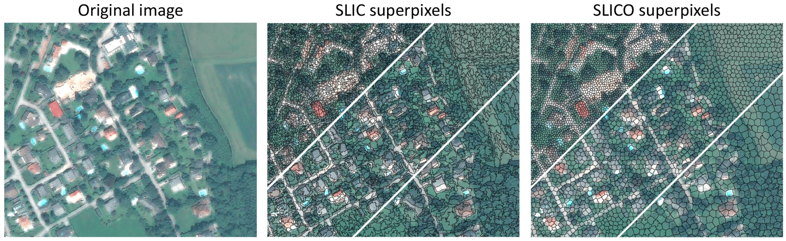
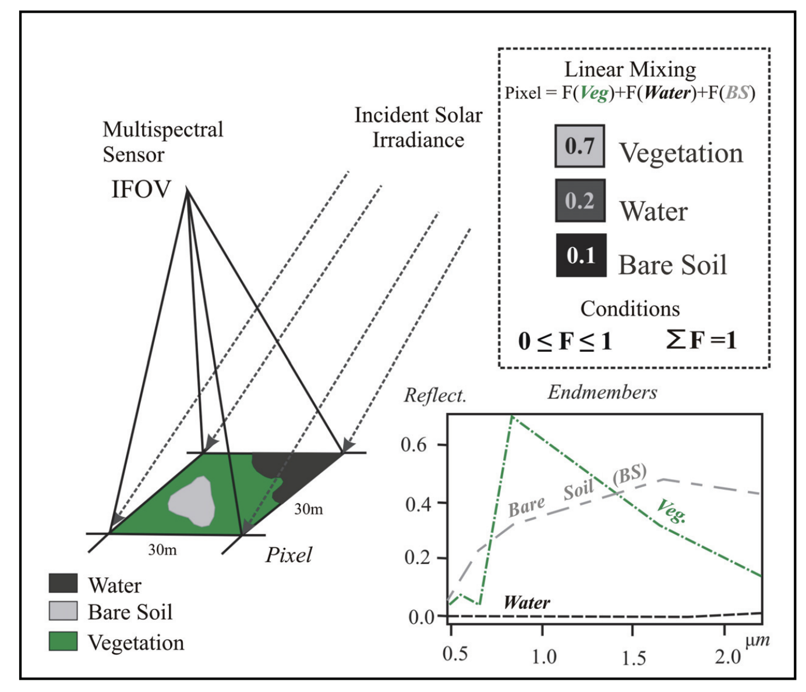
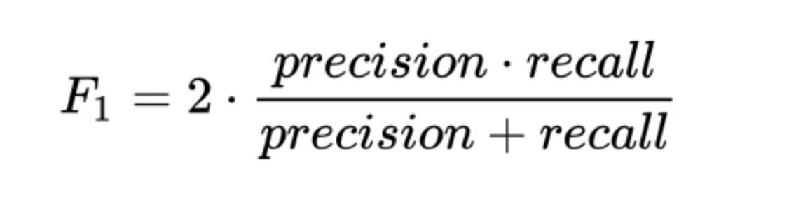

7 Week08
This week, we explore more classification methods and discuss the accuracy assessment for image classification.
1. Content Summary: Classification II
1.1 Object-based Image Analysis (OBIA)
Compared to pixel-based supervised and unsupervised classification, OBIA aims to group pixels into objects, which are vector shapes with size and geometry (GISGeography,2024). Through the application of OBIA, the feature statistics of various objects, encompassing spectral, contextual, and shape features, can be captured to the fullest extent (Blaschke, 2010). Thus, the method connects raster EO data and vector data in the Geographic Information System ( Hay and Castilla,2008). As shown in Figure 1, OBIA consists of two main phases: (1) Image Segmentation Phase and (2) Post-segmentation Phase ( feature extraction and classification).

However, it is worth noting that OBIA also has significant uncertainties in image processing. Hao, Cui and Wang (2021) indicate that the challenges have led to various issues, such as the selection of segmentation scale, training samples, and accuracy assessment, influencing the accuracy of image feature extraction. Therefore, we must carefully consider the segmentation methods we use when conducting OBIA.
- Simple Linear Iterative Clustering (SLIC)
In the lecture, the SLIC Algorithm is introduced as the common method of OBIA. SLIC is an adaptation of the k-means clustering algorithm for superpixel generation (Csillik, 2016). As the only parameter of the algorithm, K (the desired number of approximately equally sized superpixels) needs to be set, and superpixels are created by grouping nearby pixels with colour and spatial attributes proximity, considering the objects based on the similarity or difference of the pixels (Achanta et al.,2012). Regarding the working principle, the method adopts an algorithm that initiates from an initial rough pixel clustering and iteratively enhances the clusters until certain criteria are satisfied, ultimately forming superpixels(Csillik, 2016).
Regarding the advantages of using SLIC, Achanta et al. (2012) indicate that SLIC surpasses current methods in computation speed, reducing computational complexity, memory efficiency, and boundary adherence, which can enhance the efficacy and quality of segmentation algorithms. However, Csillik (2017) illustrates the disadvantages of using superpixels and emphasises the need to carefully choose the size of superpixels: smaller superpixels can improve the geometric accuracy of objects but increase the computational time; larger superpixels ignore important boundaries and increase the internal heterogeneity of objects (Figure 2).

Left: 5 × 5 pixels, middle: 10 × 10 pixels, and right: 15 × 15 pixels.
1.2 Sub Pixel Analysis
Also known as Sub-pixel Classification, Spectral Mixture Analysis (SMA), Linear Spectral Unmixing.
Spectral Mixture Analysis (SMA) is proposed to accurately identify and quantify mixed land cover in real-world EO data. SMA is employed to compute the proportions or abundance of different land cover types within a pixel, and this method involves representing a mixed spectrum within the pixel as a mixture of spectra corresponding to pure land cover types(endmembers)(Wu and Murray, 2003). Perez Machado and Small (2013) indicate that SMA improves image interpretability, as it considers the physical processes leading to the observed radiances (below pixel scale) and allows for the presence of mixed pixels. There are two methods of SMA, which are linear and nonlinear. In research, the linear ones are usually employed (Wu and Murray, 2003; Perez Machado and Small,2013), as illustrated in Figure 3

Linear Spectral Mixture Model (LSMM) considers the mixture as a linear combination of the different components of the pixel weighted by their respective proportions.
1.3 Accuracy assessment
Following the classification production, it is necessary to assign an accuracy assessment to the classification results.
1.3.1 Error matrix (Confusion matrix)
The matrix is used to visualise the accuracy performance of classification, which is sub-classified into two types: the binary and the multiclass confusion matrix.
In the binary cases, accuracy performance is measured by:
- Producer accuracy
- User’s accuracy
- Overall accuracy
The details and equations can be found inBarsi(2018)
In the multiclass cases, accuracy performance is measured by:
- Errors of omission (100-producer’s accuracy)
- Errors of commission (100- user’s accuracy)
- Overall accuracy: The proportion of diagonal elements(correct classification) to the total
The details and equations can be found in Earth System Science and Remote Sensing (2020)
- Others: F1 Score
When using real EO data for machine learning, we often encounter some problems in accuracy assessment. For example, We can’t have both a high producer accuracy (recall) and a high user accuracy (precision).

F1_Score is a balance between precision and recall, takes beta attribute which weights precision or recall (usually beta = 1) (Figure 4). The socre ranges from 0 to 1, with 1 representing the model’s best output and 0 representing the model’s worst output.
1.3.2 Kappa coefficient
The Kappa coefficient is widely advocated and employed as a metric for assessing accuracy in remote sensing.
- It is generated from a statistical measure to evaluate the accuracy of a classification.
- Range from 0 to 1
- However, Based on the research results. Foody(2020) indicates that the Kappa coefficient is flawed and/or irrelevant to the accuracy assessment of remote sensing classification.